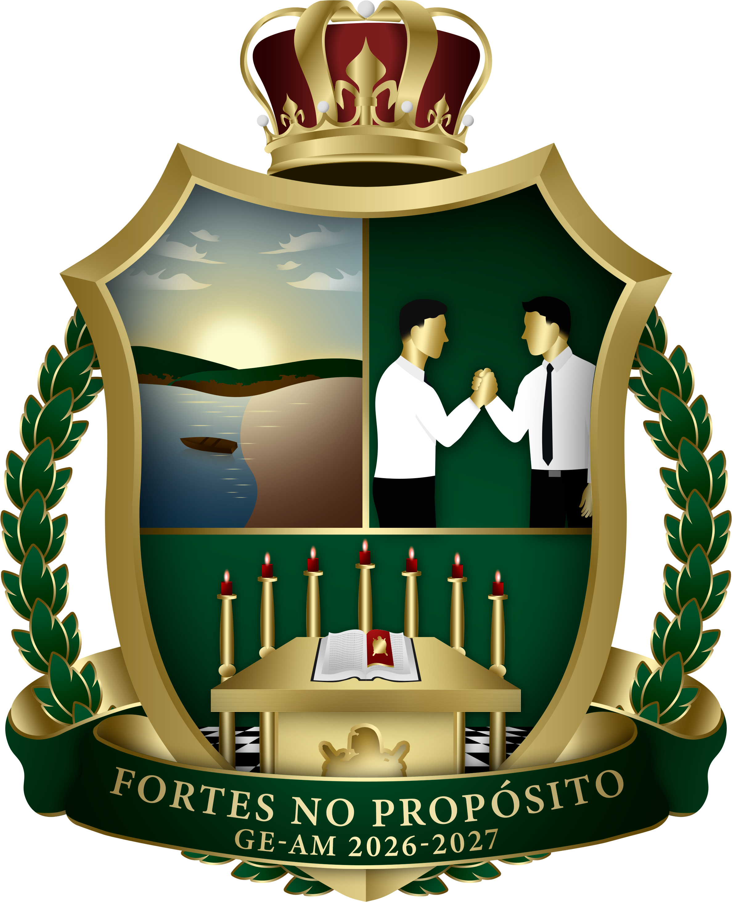

Composição atual
- Mestre Conselheiro Estadual: Luiz Eduardo Souza Araújo.
- Mestre Conselheiro Estadual Adjunto: Rafael Oliveira Nunes.
- Secretário Geral: Pedro David Silva Ferreira.
- Secretário de Projetos: Gabriel Dias Rejtman.
- Mestre Conselheiro Regional (1ª Região): Paulo Henrique Guedes Araujo.
- Mestre Conselheiro Regional (2ª Região): Ítalo Matheus Gomes Ramos da Silva.
- Mestre Conselheiro Regional (3ª Região): Isaac de Oliveira Rodrigues.
